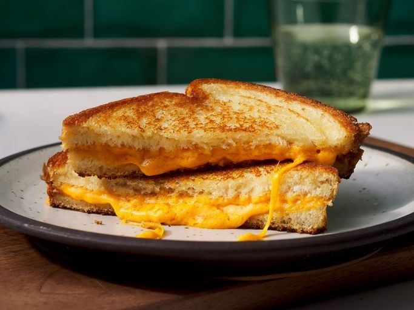

Grilled Cheese Sandwich

Description
A classic comfort food made with fresh bread and creamy cheese, toasted or served cold for a quick, satisfying bite.
Ingredients
- Butter
- Bread Slices
- Cheese
Steps
- Butter two bread slices. Place one slice, butter-side down, in a skillet.
- Add 2–3 slices of cheese (cheddar, mozzarella, or mix). Top with second slice, butter-side up.
- Grill on medium until golden and cheese melts, about 2–3 minutes per side. Press slightly with spatula for even browning.
- Serve warm with tomato soup or pickles. Add extras like ham, tomato, or caramelized onions for variety.